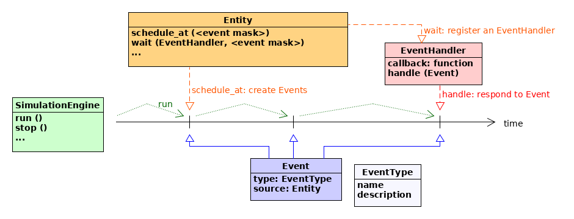

Discrete event simulation
In the previous example quantum teleportation was demonstrated in terms of qubits and their shared quantum states. This included the effects of quantum noise due to Bob’s qubit having to wait for Alice’s classical corrections to arrive. In this part of the tutorial we extend teleportation with a timing model by using the pydynaa discrete event simulation engine.
Using a discrete event simulator for quantum networks requires that the quantum states present in the network can be updated or evolved in discrete time steps. In other words, it should be possible to derive and apply quantum operations that model arbitrary passages of time. By restricting ourselves to discrete variable quantum systems, and more specifically systems described by qubits, this is fortunately the case.
Below we will present several quantum inspired examples of how to use the discrete event simulation engine. For pedagogic reasons these examples don’t make use of the full network component modelling or protocol machinery of NetSquid that will significantly improve and shorten the examples presented below – these tools will be presented in later sections of this tutorial.
Learning goals
Getting familiar with discrete event simulation (essential).
Scheduling and handling events and running a simulation (essential).
Defining and handling event expressions (advanced).
Advanced sections are denoted by an asterix (*).
The pyDynAA simulation engine
The simulation package pyDynAA defines a handful of classes that represent its key concepts.
Namely these concepts (classes) are the entities of a simulation (Entity), events (Event) of a specific type (EventType) that occur at scheduled times during a simulation run, event expressions (EventExpression) that can be used to describe logical event combinations, handlers objects (EventHandler and ExpressionHandler) that respond to triggered events, and the simulation engine (SimulationEngine) that manages the event scheduling and handler registration.
Simulation entities are anything in the simulation world that can generate or respond to events. The Entity base class, which should always be sub-classed, provides methods for scheduling events and waiting for them. Scheduled events will occur at given instances on the simulation timeline. The simulation engine runs by stepping sequentially from event to event in a discrete fashion. An entity can respond to events by registering an event handler object with a callback function to wait for event(s) with specified or unspecified type, source, and id to be triggered.
The following diagram illustrates several key classes and their interactions:
The simulation engine is a singleton object that NetSquid has wrapped with convenience functions such as sim_run(), sim_stop(), sim_reset(), sim_time(), etc. See the simtools module for the full simulation API.
A quantum ping pong example
To illustrate how pyDynAA works let us consider an example of a game of ping pong played with a qubit. Similarly to the 10 minute tutorial. We begin by importing the NetSquid and pyDynAA packages. To ensure our output is reproducible we also fix the seed to NetSquid’s random number generator, which will be used in the example below to perform the quantum measurements.
>>> import netsquid as ns
>>> import pydynaa
>>> ns.set_random_state(seed=42)
For our game of quantum ping pong we define two simulation entities, PingEntity and PongEntity, which both subclass from the Entity class.
This sub-classing (inheritance) is essential because only entities may schedule events on the simulation engine timeline or listen to them.
{kind=link}
Our ping and pong entities will take turns to react to each other’s ping and pong events and measure a shared qubit in the standard (\((\vert 0\rangle, \vert 1\rangle)\)) or Hadamard (\((\vert +\rangle, \vert -\rangle)\)) basis, respectively. The two entities can be setup as follows, which we explain in more detail directly below.
>>> class PingEntity(pydynaa.Entity):
... ping_evtype = pydynaa.EventType("PING_EVENT", "A ping event.")
... delay = 10.
...
... def start(self, qubit):
... # Start the game by scheduling the first ping event after delay
... self.qubit = qubit
... self._schedule_after(self.delay, PingEntity.ping_evtype)
...
... def wait_for_pong(self, pong_entity):
... # Setup this entity to listen for pong events from a PongEntity
... pong_handler = pydynaa.EventHandler(self._handle_pong_event)
... self._wait(pong_handler, entity=pong_entity,
... event_type=PongEntity.pong_evtype)
...
... def _handle_pong_event(self, event):
... # Callback function called by the pong handler when pong event is triggered
... m, prob = ns.qubits.measure(self.qubit, observable=ns.Z)
... labels_z = ("|0>", "|1>")
... print(f"{ns.sim_time():.1f}: Pong event! PingEntity measured "
... f"{labels_z[m]} with probability {prob:.2f}")
... self._schedule_after(PingEntity.delay, PingEntity.ping_evtype)
...
>>> class PongEntity(pydynaa.Entity):
... pong_evtype = pydynaa.EventType("PONG_EVENT", "A pong event.")
... delay = 10.
...
... def wait_for_ping(self, ping_entity):
... # Setup this entity to listen for ping events from a PingEntity
... ping_handler = pydynaa.EventHandler(self._handle_ping_event)
... self._wait(ping_handler, entity=ping_entity,
... event_type=PingEntity.ping_evtype)
...
... def _handle_ping_event(self, event):
... # Callback function called by the ping handler when ping event is triggered
... m, prob = ns.qubits.measure(event.source.qubit, observable=ns.X)
... labels_x = ("|+>", "|->")
... print(f"{ns.sim_time():.1f}: Ping event! PongEntity measured "
... f"{labels_x[m]} with probability {prob:.2f}")
... self._schedule_after(PongEntity.delay, PongEntity.pong_evtype)
...
>>> # Create entities and register them to each other
>>> ping = PingEntity()
>>> pong = PongEntity()
>>> ping.wait_for_pong(pong)
>>> pong.wait_for_ping(ping)
>>> #
>>> # Create a qubit and instruct the ping entity to start
>>> qubit, = ns.qubits.create_qubits(1)
>>> ping.start(qubit)
Scheduling events
The game is started (but the simulation not yet run) by calling the start() method of the ping entity and passing the qubit to be ping-ponged as a parameter.
In the example above the qubit starts in the \(\vert 0\rangle\) state.
1class PingEntity(pydynaa.Entity):
2 ping_evtype = pydynaa.EventType("PING_EVENT", "A ping event.")
3 delay = 10.
4
5 def start(self, qubit):
6 # Start the game by immediately scheduling the first ping event
7 self.qubit = qubit
8 self._schedule_now(PingEntity.ping_evtype)
From inspecting the start method we see that the qubit is stored for later use, after which the entity immediately schedules an event using the _schedule_now() method (line 8).
To schedule an event it is always necessary to specify the type (EventType), which in this case is defined by the class attribute ping_evtype.
Note that the methods inherited from the Entity class that relate to scheduling and listening, such as _schedule_now(), start with an underscore to indicate they are private to the subclassing entity i.e. only this entity itself should call them.
Waiting for and handling events
To keep the game going the pong entity has been setup to listen and respond to ping events by the wait_for_ping() method.
1def wait_for_ping(self, ping_entity):
2 # Setup this entity to listen for ping events from a PingEntity
3 ping_handler = pydynaa.EventHandler(self._handle_ping_event)
4 self._wait(ping_handler, entity=ping_entity, event_type=PingEntity.ping_evtype)
The wait_for_ping() method first creates an event handler (EventHandler) that references the callback function to call when a ping event is triggered.
It then passes this event handler to the entity’s _wait() method along with a specification of the events to trigger on: in this case events scheduled by the ping_entity and of type PingEntity.ping_evtype.
The pong entity will now continuously wait and handle all matching ping events that occur.
If instead it only wished to wait for and handle the first event, it could have used the _wait_once() method instead.
The callback function referenced by the event handler created in the wait_for_ping() method is the _handle_ping_event() method.
1def _handle_ping_event(self, event):
2 # Callback function called by the ping handler when a ping event is triggered
3 m, prob = ns.qubits.measure(event.source.qubit, observable=ns.X)
4 labels_x = ("|+>", "|->")
5 print(f"{ns.sim_time():.1f}: Ping event! PongEntity measured {labels_x[m]} "
6 f"with probability {prob:.2f}")
7 self._schedule_after(PongEntity.delay, PongEntity.pong_evtype)
A callback function of an event handler is passed the triggered event (Event) as an argument.
In the example above the event is used to retrieve its source, the ping entity,
which the pong entity uses to access the shared qubit.
Note that in later sections we will introduce quantum components that can be used to properly exchange quantum information.
The pong entity measures the qubit in the Hadamard basis and prints the result.
Finally, it schedules an event of type pong_evtype to occur after a fixed delay using the _schedule_after() method.
The ping entity has been setup to analogously listen and react to pong events. The only difference is that it measures the qubit in the standard basis. This game of quantum ping pong will continue indefinitely, as new events are dynamically generated after every ping and pong.
Running a simulation
Now let’s run the simulation using the sim_run() function.
When no arguments are specified the simulation engine runs until there are no scheduled events remaining on its future timeline.
To limit the run time, which would otherwise be infinite for our ping pong game, we can specify either an end_time or duration parameter.
In both cases the simulation engine will run up to the time limit specified, but not yet trigger any events scheduled at that instant.
Thus to ensure also the event scheduled at 90 ns (nanoseconds is the default time unit in NetSquid) is printed, we will specify an end time of 91 ns.
>>> stats = ns.sim_run(end_time=91)
10.0: Ping event! PongEntity measured |+> with probability 0.50
20.0: Pong event! PingEntity measured |1> with probability 0.50
30.0: Ping event! PongEntity measured |-> with probability 0.50
40.0: Pong event! PingEntity measured |1> with probability 0.50
50.0: Ping event! PongEntity measured |+> with probability 0.50
60.0: Pong event! PingEntity measured |0> with probability 0.50
70.0: Ping event! PongEntity measured |+> with probability 0.50
80.0: Pong event! PingEntity measured |1> with probability 0.50
90.0: Ping event! PongEntity measured |-> with probability 0.50
The run function outputs a SimStats object that has recorded interesting statistics about the simulation.
To see a summary we can print this object:
>>> print(stats)
Simulation summary
==================
Elapsed wallclock time: ...
Elapsed simulation time: 9.10e+01 [ns]
Triggered events: 9
Handled callbacks: 9
Total quantum operations: 9
Frequent quantum operations: MEASURE = 9
Max qstate size: 1 qubits
Mean qstate size: 1.00 qubits
We see that the simulation indeed tooks 91 nanoseconds, and that exactly 9 events were scheduled and handled. There were also 9 quantum operations, our measurements, and the maximum quantum state size operated on was 1 qubit, as expected.
Event expressions by example: quantum teleportation *
Let us now consider a more involved example that extends the previous quantum teleportation example with discrete events. First we reset the simulation timeline, which clears any events still on the timeline and sets the simulation time back to zero:
>>> ns.sim_reset()
We will define three simulation entities: Alice, Bob, and Charlie.
Charlie will be responsible for continuously generating an entangled pair of qubits (the \(\vert B_{00}\rangle\) Bell state), with one qubit intended for Alice and the other for Bob.
Alice will wait for her entangled qubit to arrive, and once it does she will entangle her own qubit with it, measure both and send the classical corrections to Bob.
Bob will simultaneously wait on both his entangled qubit from Charlie and the classical correction information from Alice.
To do that he will make use of so called event expressions (EventExpression), as we will soon explain.
{kind=link}
The Charlie entity class is implemented as follows:
>>> class Charlie(pydynaa.Entity):
... ready_evtype = pydynaa.EventType("QUBITS_READY", "Entangled qubits are ready.")
... _generate_evtype = pydynaa.EventType("GENERATE", "Generate entangled qubits.")
... period = 50.
... delay = 10.
...
... def __init__(self):
... # Initialise Charlie by entangling qubits after every generation event
... self.entangled_qubits = None
... self._generate_handler = pydynaa.EventHandler(self._entangle_qubits)
... self._wait(self._generate_handler, entity=self,
... event_type=Charlie._generate_evtype)
...
... def _entangle_qubits(self, event):
... # Callback function that entangles qubits and schedules an
... # entanglement ready event
... q1, q2 = ns.qubits.create_qubits(2)
... ns.qubits.operate(q1, ns.H)
... ns.qubits.operate([q1, q2], ns.CNOT)
... self.entangled_qubits = [q1, q2]
... self._schedule_after(Charlie.delay, Charlie.ready_evtype)
... print(f"{ns.sim_time():.1f}: Charlie finished generating entanglement")
... self._schedule_after(Charlie.period, Charlie._generate_evtype)
...
... def start(self):
... # Begin generating entanglement
... print(f"{ns.sim_time():.1f}: Charlie start generating entanglement")
... self._schedule_now(Charlie._generate_evtype)
It uses the same basic ingredients as the entities in the ping pong example to schedule and wait for events. In this case we define two event types: a private _generate_evtype that is used to simulate a frequency in generating entanglement, and the public ready_evtype that is used to signal the successful generation of entanglement to Alice and Bob. The callback function of the _generate_handler() is seen to schedule the ready event after a delay, and then scheduling the next generation event.
The Alice entity class similarly defines the public and private event types ready_evtype and _teleport_evtype. The former communicates to Bob that his classical corrections are ready e.g. have been transmitted to him (later we will explain how to model transmission with channel components). The latter is used to simulate a delay in performing Alice’s local teleport operation.
>>> class Alice(pydynaa.Entity):
... ready_evtype = pydynaa.EventType("CORRECTION_READY", "Corrections are ready.")
... _teleport_evtype = pydynaa.EventType("TELEPORT", "Teleport the qubit.")
... delay = 20.
...
... def __init__(self, teleport_state):
... # Initialise Alice by setting the teleport state and waiting to teleport
... self.teleport_state = teleport_state
... self.q0 = None
... self.q1 = None
... self.corrections = None
... self._teleport_handler = pydynaa.EventHandler(self._handle_teleport)
... self._wait(self._teleport_handler, entity=self,
... event_type=Alice._teleport_evtype)
...
... def wait_for_charlie(self, charlie):
... # Setup Alice to wait for an entanglement qubit from Charlie
... self._qubit_handler = pydynaa.EventHandler(self._handle_qubit)
... self._wait(self._qubit_handler, entity=charlie,
... event_type=Charlie.ready_evtype)
...
... def _handle_qubit(self, event):
... # Callback function that handles arrival of entangled qubit
... # and schedules teleportation
... self.q0, = ns.qubits.create_qubits(1, no_state=True)
... self.q1 = event.source.entangled_qubits[0]
... ns.qubits.assign_qstate([self.q0], self.teleport_state)
... self._schedule_after(Alice.delay, Alice._teleport_evtype)
... print(f"{ns.sim_time():.1f}: Alice received entangled qubit")
...
... def _handle_teleport(self, event):
... # Callback function that does teleportation and schedules
... # a corrections ready event
... ns.qubits.operate([self.q0, self.q1], ns.CNOT)
... ns.qubits.operate(self.q0, ns.H)
... m0, __ = ns.qubits.measure(self.q0)
... m1, __ = ns.qubits.measure(self.q1)
... self.corrections = [m0, m1]
... self._schedule_now(Alice.ready_evtype)
... print(f"{ns.sim_time():.1f}: Alice measured qubits & sending corrections")
Alice is seen to define two separate event handlers with corresponding callback functions.
It is Bob’s job to wait until both the entangled qubit from Charlie and the classical corrections from Alice are ready, at which point he will finish the teleportation task by applying possible corrections to his local qubit.
>>> class Bob(pydynaa.Entity):
...
... def wait_for_teleport(self, alice, charlie):
... # Setup Bob to wait for his entangled qubit and Alice's corrections
... charlie_ready_evexpr = pydynaa.EventExpression(
... source=charlie, event_type=Charlie.ready_evtype)
... alice_ready_evexpr = pydynaa.EventExpression(
... source=alice, event_type=Alice.ready_evtype)
... both_ready_evexpr = charlie_ready_evexpr & alice_ready_evexpr
... self._teleport_handler = pydynaa.ExpressionHandler(self._handle_teleport)
... self._wait(self._teleport_handler, expression=both_ready_evexpr)
...
... def _handle_teleport(self, event_expression):
... # Callback function that handles messages from both Alice and Charlie
... qubit = event_expression.first_term.atomic_source.entangled_qubits[1]
... alice = event_expression.second_term.atomic_source
... self._apply_corrections(qubit, alice.corrections)
...
... def _apply_corrections(self, qubit, corrections):
... # Apply teleportation corrections and check fidelity
... m0, m1 = corrections
... if m1:
... ns.qubits.operate(qubit, ns.X)
... if m0:
... ns.qubits.operate(qubit, ns.Z)
... fidelity = ns.qubits.fidelity(qubit, alice.teleport_state, squared=True)
... print(f"{ns.sim_time():.1f}: Bob received entangled qubit and corrections!"
... f" Fidelity = {fidelity:.3f}")
To wait for both Alice and Bob simultaneously Bob makes use of event expressions (EventExpression) in the wait_for_teleport() method.
Event expressions can be either atomic or composite.
An atomic event expressions describes future events similarly to a call to _wait() or _wait_once() does: the source, type and id of the event(s) can all be optionally specified.
A composite expression combines two atomic or composite expressions with a logical AND or OR.
An event expression can be used in combination with event expression handlers (ExpressionHandler) in calls to _wait() and _wait_once().
For example, below we demonstrate multiple ways to wait for specific events with and without an atomic event expression:
# (entity, event_type, id) of events we wish to wait for
my_source = pydynaa.Entity() # a generic entity for testing purposes only
my_event_type = EventType("TestType", "Type for testing")
my_id = pydynaa.Event.any_id
def event_handler_callback(event):
# Callback function that takes event as a parameter
print(event.source)
def expr_handler_callback(event_expression):
# Callback function that takes event expression as a parameter
event = event_expression.triggered_events[-1]
print(event.source)
event_handler = pydynaa.EventHandler(event_handler_callback)
expr_handler = pydynaa.ExpressionHandler(expr_handler_callback)
# Define an atomic event expression to represent
atomic_expression = pydynaa.EventExpression(source=my_source,
event_type=my_event_type,
event_id=my_id)
# Following calls to wait for a specific (entity, event_type, id) are equivalent:
myentity._wait(expr_handler, expression=atomic_expression)
myentity._wait(event_handler, entity=my_source, event_type=my_event_type, event_id=my_id)
# Also possible but not recommended:
myentity._wait(event_handler, expression=atomic_expression)
myentity._wait(expr_handler, entity=my_source, event_type=my_event_type, event_id=my_id)
The real power of event expressions is due to the composite variety. This is illustrated in the wait_for_teleport() method, where two event expressions are combined using a logical AND (represented by the & operator):
1charlie_ready_evexpr = pydynaa.EventExpression(source=charlie,
2 event_type=Charlie.ready_evtype)
3alice_ready_evexpr = pydynaa.EventExpression(source=alice,
4 event_type=Alice.ready_evtype)
5both_ready_evexpr = charlie_ready_evexpr & alice_ready_evexpr
The resulting composite event expression both_ready_evexpr will trigger (if waited on) only when both of the atomic event expressions for Charlie and Alice have triggered. This event expression can be handled using an expression handler, which wraps a callback function that expects the triggered event expression as an argument. This allows the callback function to inspect the expressions for which events triggered, their sources, etc.
1def wait_for_teleport(self, alice, charlie):
2 ...
3 self._teleport_handler = pydynaa.ExpressionHandler(self._handle_teleport)
4 self._wait(self._teleport_handler, expression=both_ready_evexpr)
5
6def _handle_teleport(self, event_expression):
7 # Callback function that applies corrections to Bob's qubit and reports fidelity
8 charlie = event_expression.first_term.atomic_source
9 alice = event_expression.second_term.atomic_source
10 ...
The entities classes we defined above for Alice, Bob, and Charlie can now be instantiated. We have given Alice the qubit state \(\vert -\rangle\) to teleport to Bob. We also define a funtion to link them to each other and to tell Charlie to begin generating and distributing entanglement.
>>> def setup_network(alice, bob, charlie):
... alice.wait_for_charlie(charlie)
... bob.wait_for_teleport(alice, charlie)
... charlie.start()
...
>>> alice = Alice(teleport_state=ns.h1)
>>> bob = Bob()
>>> charlie = Charlie()
We now setup the network and run the simulation up to 100 ns to allow two rounds of teleportation:
>>> setup_network(alice, bob, charlie)
0.0: Charlie start generating entanglement
>>> stats = ns.sim_run(end_time=100)
0.0: Charlie finished generating entanglement
10.0: Alice received entangled qubit
30.0: Alice measured qubits & sending corrections
30.0: Bob received entangled qubit and corrections! Fidelity = 1.000
50.0: Charlie finished generating entanglement
60.0: Alice received entangled qubit
80.0: Alice measured qubits & sending corrections
80.0: Bob received entangled qubit and corrections! Fidelity = 1.000
We see from the reported fidelity values that Bob successfully received the \(\vert -\rangle\) state from Alice twice.
>>> print(stats)
Simulation summary
==================
Elapsed wallclock time: ...
Elapsed simulation time: 1.00e+02 [ns]
Triggered events: 8
Handled callbacks: 10
Total quantum operations: 15
Frequent quantum operations: MEASURE = 4; H = 4; CX = 4; Z = 2; X = 1
Max qstate size: 3 qubits
Mean qstate size: 2.07 qubits
The simulation statistics show that more handlers were called than events triggered. That is due to our use of event expressions, which internally define some extra handler callbacks. We further see that the maximum quantum state size achieved was 3 qubits, which occurs after Alice entangles the qubit to be teleported into the entangled pair generated by Charlie.
Finally, let us actually make use of our discrete event simulator by adding time-dependent noise to Bob’s waiting qubit.
We compute the time difference between the arrival of Bob’s qubit (from Charlie) and the current simulation time and pass this as the delay to the delay_depolarize() function:
>>> class NoisyBob(Bob):
... depolar_rate = 1e7 # depolarization rate of waiting qubits [Hz]
...
... def _handle_teleport(self, event_expression):
... # Callback function that first applies noise to qubit before corrections
... alice_expr = event_expression.second_term
... charlie_expr = event_expression.first_term
... # Compute time that qubit from Charlie has been waiting:
... delay = ns.sim_time() - charlie_expr.triggered_time
... # Apply time-dependent quantum noise to Bob's qubit:
... qubit = charlie_expr.atomic_source.entangled_qubits[1]
... ns.qubits.delay_depolarize(qubit, NoisyBob.depolar_rate, delay)
... # Apply classical corrections (as before):
... self._apply_corrections(qubit, alice_expr.atomic_source.corrections)
To immediately see the effect this has on the fidelity we switch to the density matrix formalism. While this works for this simple case, measurements on a density matrix will still select only one random result, which can make them no more useful than ket vectors, yet slower and more memory hungry.
>>> ns.sim_reset()
>>> ns.set_qstate_formalism(ns.QFormalism.DM)
We now reinitialise our entities, this time with a NoisyBob and rerun our simulation once. We observe that the noise on Bob’s qubit has caused a drop in fidelity of the teleported qubit.
>>> alice = Alice(teleport_state=ns.h1)
>>> bob = NoisyBob()
>>> charlie = Charlie()
>>> setup_network(alice, bob, charlie)
0.0: Charlie start generating entanglement
>>> stats = ns.sim_run(end_time=50)
0.0: Charlie finished generating entanglement
10.0: Alice received entangled qubit
30.0: Alice measured qubits & sending corrections
30.0: Bob received entangled qubit and corrections! Fidelity = 0.909
What is next?
In the following sections of this tutorial we will present entities that model the components in a quantum network, such as quantum and classical channels and quantum memories and processors. These components will do much of the work of managing transmission and waiting times for you, as well as automatically applying quantum error models.